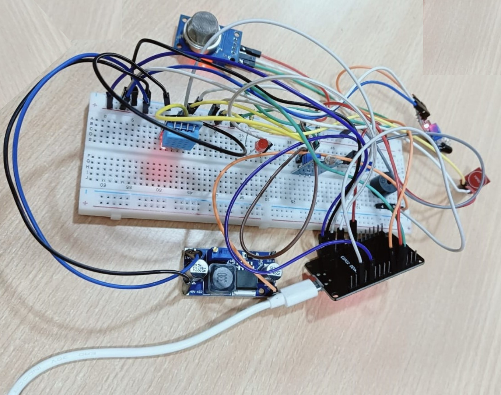

ParaEase is an innovative and cost-effective IoT-based solution specifically designed to enhance the quality of life for differently-abled individuals by promoting independence, safety, and ease of living through smart technology. In today’s world, where the Internet of Things (IoT) is revolutionizing everyday conveniences from voice activated lighting to motion-sensing devices ParaEase bridges the accessibility gap by ensuring that such technological benefits are also accessible to individuals with physical limitations resulting from accidents, congenital conditions, or neurological impairments. At the heart of ParaEase lies the ESP32 microcontroller, which not only acts as the central processing unit but also facilitates wireless communication with cloud platforms. The system incorporates multiple sensors, including the MQ2 gas sensor for detecting potentially hazardous gas leaks, the DHT11 sensor for continuous temperature and humidity monitoring, the IR sensor for motion detection, and an LDR sensor for light intensity measurement, which enables automatic LED lighting when it gets dark—ensuring visibility and safety for users with mobility challenges. Additionally, a touch sensor allows users to send alerts effortlessly using any part of their body, triggering a dual alert mechanism comprising a buzzer for nearby caregivers and instant Telegram notifications for remote family members or caretakers, ensuring timely support during emergencies. ParaEase also integrates with the Blynk cloud interface, allowing users or caregivers to control lights remotely via a smartphone app or web platform, further promoting autonomy. All of these features come together in a system that is not only easy to install and use but also highly affordable, with an estimated setup cost of under ₹1000, making it accessible to a wide audience, including those with limited financial means. The project emphasizes user-centric design, ensuring that every feature—whether it’s environmental monitoring, motion-triggered alerts, or remote control functionalities addresses real life challenges faced by specially abled individuals. With future enhancements such as voice assistant integration and additional health-monitoring sensors like fall detection or heart rate monitoring, ParaEase has the potential to evolve into a comprehensive smart care platform. This project not only reflects the power of open source development and affordable electronics but also underscores a strong commitment to social inclusion and technological empowerment for all, especially those often overlooked by mainstream smart home innovations.